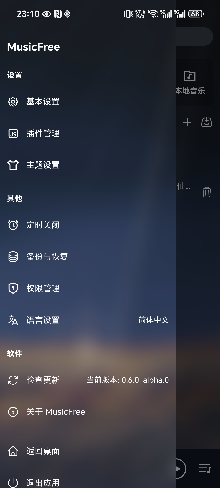

播放器和音源解耦——MusicFree 为什么能在版权灰区活得这么久
音乐工具做聚合几乎是一条必死之路：版权围剿、API 变动、作者跑路。MusicFree 用"播放器壳 + 插件音源"的架构把自己从必死名单里摘了出来——这篇拆解它的设计原理和隐含代价。
一个反常识的问题
你有没有想过一件事：为什么市面上那些"全网音乐聚合"的工具，要么半年就没了，要么慢慢变成广告 App？版权打击是最常被提到的原因，但这只是表层。真正致命的是架构——这些工具把播放器和音源绑死在一起：应用本身就是那个"聚合了所有平台音源"的东西，所以它同时要承担所有平台的版权压力、API 变动风险、和用户对每个音源的功能期待。
一个音源接口变了，整个 App 就卡；一个平台要求下架，整个 App 就得改；版权方盯上的是"聚合全网音源"这个整体，不是某个单独的功能模块。这是结构性的弱点。
MusicFree官网 反着来。它从第一行代码就没打算做"聚合全网"——它做的是一个播放器壳，音源全部外置成插件。这个设计决定了它在版权灰区有完全不同的生存逻辑，也解释了为什么一个业余开发者每天只花半小时维护的项目，居然能持续活着。
解耦：它到底解了什么
把播放器和音源拆开来，听上去像是工程上的洁癖，但背后有三层真实的技术含义。
第一层是法律风险的物理隔离。宿主软件本身不包含任何平台的音源代码——它不知道网易云的接口长什么样，不知道 QQ 音乐返回什么字段，它只知道一件事：调用插件的 GetMediaUrl 方法，传过去几个参数，拿回一个播放链接。版权方如果要追责，从宿主代码里找不到任何实锤。是某个具体的插件实现了某个平台的抓取逻辑，那个插件可能来自第三方仓库，可能已经停更，可能作者失联。宿主保持"纯净"——这是开发者反复强调的原则，也是 AGPL 3.0 开源协议下的一个精妙掩护。
第二层是迭代速度的解耦。播放器的界面、歌单管理、歌词显示、主题切换这些功能，和音源接口没有任何关系。网易云今天改了签名算法，你去更新网易云插件就行，播放器不需要动。某个插件作者跑路了，换一个新人写的同名插件，播放器完全感受不到变化。这种解耦让 MusicFree 的维护成本比"聚合工具"低了一个数量级——每天半小时能支撑一个播放器壳的日常迭代，但若要同时维护十几个平台的音源对接，半小时连改一个平台的签名都不够。
第三层是用户选择权的真实落地。不是那句空洞的"用户自主选择"——你真的可以决定用哪个版本的哪个插件。有人喜欢老版本的网易云插件因为它兼容某种音质，有人自己 Fork 了一个改了缓存策略，有人干脆从零写了一个只接自己私人服务器的插件。这些对 MusicFree 来说都一样——它只认那个 GetMediaUrl 接口契约，不管你背后接的是商业平台还是自建服务。

一个小机制，大设计：音质切换的真相
MusicFree 有个很容易被忽略但极能体现设计哲学的细节：音质切换按钮其实是个傀儡。
宿主在 UI 上预定义了四档音质标签——标准、较高、高、极高——但这四个标签没有任何硬编码的映射。用户点击切换时，宿主只是把"我要极高音质"这个偏好作为参数传给插件的 GetMediaUrl 方法，然后就什么都不管了。真正决定返回什么的是插件：
- 一个写得好的插件会按档位返回不同比特率的 URL；
- 一个偷懒的插件不管传什么参数都返回同一个 128kbps 链接；
- 一个被版权墙挡住的插件会强制切到它能拿到的最高档，把 VIP 音质过滤掉。
用户点了"极高音质"但听起来没区别，八成不是播放器的问题——大概率是插件只实现了一种音质，或者音源接口本身就只开放了低质量。这不是 bug，是契约。宿主和插件之间的约定就是"我传偏好，你返回你能给的"，宿主不负责验证插件有没有兑现。
这个设计看上去很"不负责任"，但放在解耦架构里完全合理。如果宿主还要去验证插件返回的音质是不是真的对应了档位，那宿主就得懂每个平台的 bitrate 参数、就得能解析音频文件头，那宿主又要重新耦合回音源细节了。放弃验证，只依赖接口契约——这是典型的 Unix 哲学在客户端应用里的实践。

双端架构的取舍：React Native 还是 Electron
MusicFree 有两个独立项目：移动端用 React Native，桌面端用 Electron。同一套插件接口在两端共用，但宿主技术栈完全不同。为什么不统一？
React Native 的优势在移动端是原生性能体验，但跨到桌面端它的生态和 Electron 比起来还差得远——尤其是文件系统访问、系统托盘、全局快捷键这些桌面播放器需要的能力，Electron 用 Node.js 生态可以直接调，React Native 就得自己写桥接。开发者选择两条技术栈并行，本质上是用维护两套 UI 的代价换取两端各自最优的用户体验。移动端拿 官方下载 的 APK 装就行，桌面端则会在同一渠道提供 .exe / .dmg / .deb 三种格式，按需取用。
当然代价也很真实。同一个功能改了逻辑，移动端和桌面端要各跑一遍测试；同一个 bug 可能在两端表现不一样；插件虽然共用接口定义，但两端宿主传参的细节可能有细微差异，插件作者要同时适配。对于每天只有半小时维护时间的业余项目来说，这其实是个不轻的负担——开发者偶尔也会在musicfree文档里提到某个功能"某端暂未实现"。
这套设计的隐性代价
讲了这么多"为什么"，也得说说这套架构做不到什么。
首先，它对普通用户不友好。聚合工具的最大卖点是"装完就能用，音源都内置好了"。MusicFree 不行——装完 APP 之后你还得去插件市场找插件、逐个安装、逐个测试哪个音源在你网络下能跑通。对技术用户来说这是"自由选择"，对普通用户来说这是"这 APP 怎么是空壳"。应用市场上那些套着 MusicFree 名字和 Logo 的广告软件能流行，根本原因就在这里——它们内置了音源，普通用户点一下就能听歌，虽然有广告但省事。
其次，业余项目的稳定性就是不稳定。开发者明确说了每天维护半小时、版本节奏不定、可能处于测试状态。你今天能用的某个插件，明天可能因为音源接口改了就挂了；你习惯的某个界面布局，下个版本可能就被改了。这不是 bug，是项目的本质——它就是一个业余兴趣项目，没有商业合同约束它的可靠性。
第三，法律上的"灰色地带"只是灰色不是安全。宿主纯净不代表插件就安全，插件作者仍然可能被追责。AGPL 3.0 协议要求二次开源，但有些仿冒品根本不遵守这套约束。开发者在 README 里专门列了一个 Hall of Shame 章节，就是因为应用市场上的仿冒品太多了——套用名字、内置音源、加广告、甚至收费标榜"破解版"，把整个项目的声誉都带脏了。
最后
MusicFree 的真正价值不是"让你免费听全网音乐"——它做不到这点，它甚至刻意不做这点。它的价值是展示了一种在版权约束下依然能活得有尊严的架构思路：宿主保持纯净、音源外置插件、风险分散到每个独立模块。这种思路放在音乐播放器里是业余项目，放在更大的格局里——比如浏览器的扩展系统、VS Code 的插件生态——就是整个行业都在走的路。
你要不要用它，取决于你对"选择自由"的重视程度。如果你只是想听个歌不想折腾，那应用市场上那些内置音源的仿冒品虽然有广告但确实省心。但如果你在意隐私、讨厌广告、想自己决定用什么音源甚至自己改插件，那 MusicFree 的架构就是为你准备的——毕竟一个每天半小时维护的业余项目能活到今天，本身就说明它的设计方向踩对了。完整的源码、安装包和文档资料分别托管在GitHub、Gitee和GitCode上，GitHub 打不开的时候走 Gitee 或 GitCode 的镜像就行。